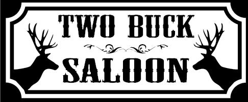

Fair Everyday Pricing
We never hike prices for major sporting events or weekend crowds. A two-dollar PBR is two dollars every single day, keeping a great night out accessible to everyone.
Two Buck Saloon was founded with a straightforward goal: create an honest, welcoming neighborhood bar where people from all walks of life can gather without spending a fortune. Starting on Hawthorne Lane in Belmont / Plaza Midwood, we've remained true to our roots as we've expanded across Greater Charlotte.

What keeps Charlotte coming back to Two Buck Saloon night after night.
We never hike prices for major sporting events or weekend crowds. A two-dollar PBR is two dollars every single day, keeping a great night out accessible to everyone.
Whether you’re in work boots, chef whites, gym shorts, or a business suit, you're treated like a regular the moment you step through our front doors.
From our Belmont original to Oakhurst, Mint Hill, Pineville, Locust, and Shelby, each location captures the unique charm of its surrounding Carolina neighborhood.